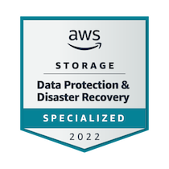

<div id="about">
  <div class="container">
      <div class="row">
          <div class="about-col-1">
              <!--  -->
              
          </div>
          <div class="about-col-2">
              <h1 class="sub-title">About Me</h1>
              <p class="about-me">
                  Highly organized and versatile computer engineer with 4 years of experience in hardware maintenance and troubleshooting. Adaptable leader with an ability to work independently and with others, creating effective presentations, and developing opportunities that further establish organizational goals. Seeking to bring my skills and experience to a progressive organization with a positive and supportive culture where I can start and grow a career.
              </p>
              <div class="tab-titles">
                  <p class="tab-links active-link" title="skills"> Skills</p>
                  <p class="tab-links" title="experience"> Experience</p>
                  <p class="tab-links" title="education"> Education & Certifications</p>
              </div>
              <!--------Skills---------->                
              <div class="tab-contents active-tab" id="skills">
                  <ul>
                      <li><span>Technical</span><ul><i class="fa-solid fa-shield-halved">
                                                      </i> Data Protection & Disaster Recovery</ul>
                                                <ul><i class="fa-brands fa-cloudversify">
                                                      </i> AWS Cloud Management</ul>
                                                <ul><i class="fa-solid fa-laptop-medical">
                                                      </i> Computer Diagnostician</ul>
                                                  </li>
                      <li><span>Interpersonal</span><br><br>
                          <ul><i class="fa-solid fa-circle-notch"></i> Technical Communication</ul>
                      <br><ul><i class="fa-solid fa-circle-notch"></i> Project Management</ul>
                      <ul><i class="fa-solid fa-circle-notch"></i> Customer Service</ul>
                      </li>
                  </ul>
              </div>
              <!--------Experience--------->                
              <div class="tab-contents" id="experience">
                  <ul>
                      <li><span>Kitchen Leader at Amazon Fresh</span><br>
                          <br><ul><i class="fa-regular fa-calendar-days"></i> January, 2021 to Present</ul>
                          <br><ul>Magnified long term strategies to develop a safer and efficient work environment.</ul>
                          <br><ul>Working closely with management to retain our best practice image as a leading training site.</ul>
                          <br><ul>Managing onboarding and training for new employees while modeling positive guidance and maintaining a safety environment, while keeping the customer&#39;s best interest.</ul>
                      </li><br>
                      <li><span>Golf Assistant</span><br>
                          <br><ul><i class="fa-regular fa-calendar-days"></i> April, 2011 to 2021</ul>
                          <br><ul>Coordinated events while creating an enjoyable and family-oriented environment amongst the membership.</ul>
                          <br><ul>Nurtured and grew existing relationships by providing pristine service to future clients of the club.</ul>
                      </li><br>  
                      <li><span>Overnight Team Lead at Target</span><br>
                          <br><ul><i class="fa-regular fa-calendar-days"></i> January, 2017 to 2018</ul>
                          <br><ul>Improved the reconstruction project of the location amongst various teams to produce an enhanced environment for our community and customers alike.</ul>
                          <br><ul>Planned, developed, and provided strategies for staff development programs for employees, using knowledge of effectiveness of methods such as demonstrations, onboard training and meetings.</ul>
                      </li>
                  </ul>
              </div>
              <!--------Education---------->                
              <div class="tab-contents" id="education">
                  <ul>
                      <li><span>Amazon Web Services</span><br></li>
                      <i class="fa-solid fa-certificate"></i> Data Protection & Disaster Recovery Specialist<br>
                      </li>
                      <li><span> Food Handler Certification</span></li>
                      <i class="fa-regular fa-calendar-days"></i> January 2021 to 2024</li>
                      <li><span> Bachelor of Science: Computer Engineering</span>
                      <li>Milwaukee School of Engineering</li>
                      <i class="fa-regular fa-calendar-days"></i> May 2018 </li>
                  </ul>
              </div>
          </div>
      </div>
  </div>
</div>